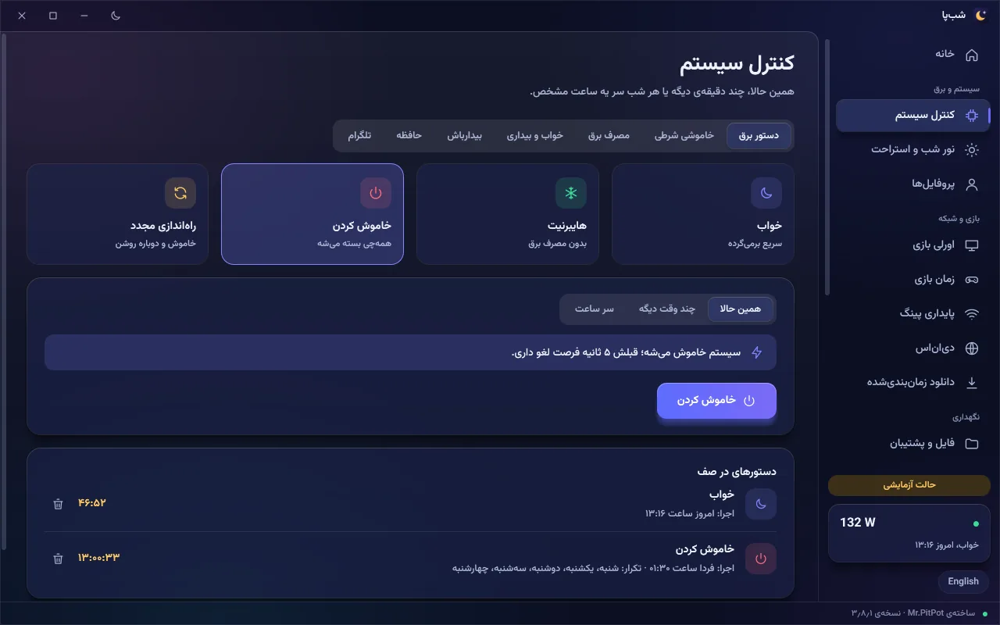

۰۱ · کنترل سیستم
خاموشی، سر وقت و بدون دردسر
خاموشکردن، خواب، هایبرنیت و ریستارت؛ همین الان، چند دقیقهی دیگه یا طبق برنامه. هر کاری قبل از اجرا یه شمارش معکوس داره که میتونی لغوش کنی.
- وقتی دانلود تموم شد، سیستم بیکار شد یا یه برنامه بسته شد
- تایمر بیدارباش و برنامهی تکرارشونده (مثلاً هر شب ۱:۳۰)
- تاریخچهی خواب و بیداری سیستم
- دستور دیررسیده (سیستم خاموش بوده) هرگز سورپرایزی اجرا نمیشه
